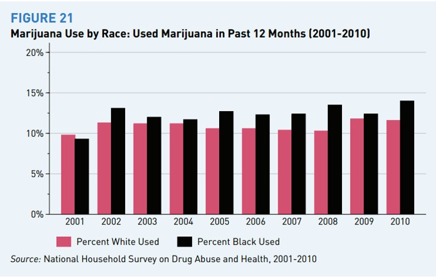
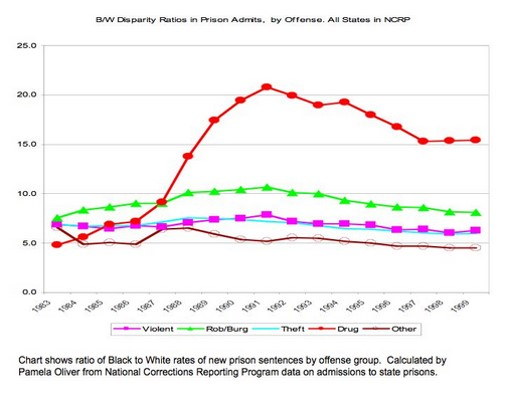
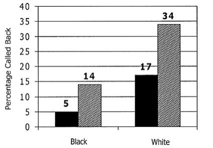
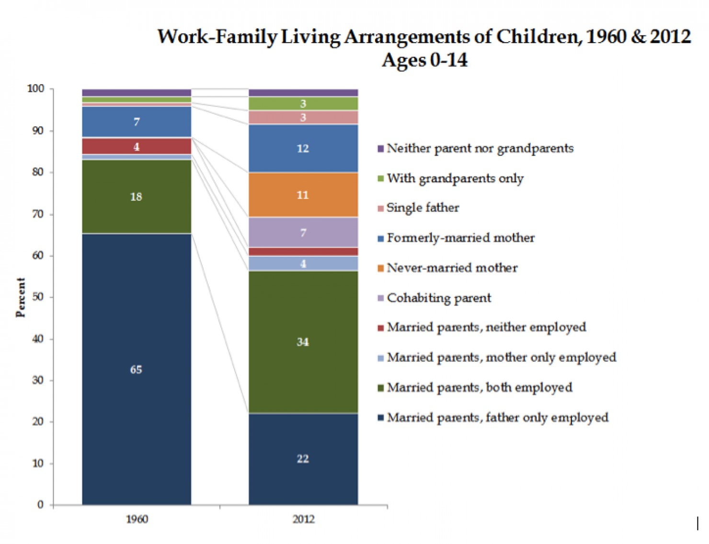

Week 8 Race and Ethnicity
14 October, 2019
Levi Sands
EXTRA CREDIT!
- Worth 10 pts
- Watch 13th on Netflix
- Write a one page paper (size 12 Calibri or Times new Roman 1 inch margins single spaced with no spaces between paragraphs) on what you learned and what can be done about it
- Due Nov 17th BEFORE Thanksgiving break
Extra Assignment
- This week instead of discussion questions you will do a race implicit bias training and answer a Qualtrics survey with the results (all results will be completely anonymous)
- You will then submit a 300 word paper on the things you learned today (can be about how you feel about it, it can be about what you think can be done about it, etc.). Remember only .txt .pdf or .docx or enter it into the text box!
- All relevant information will be on ICON
- https://implicit.harvard.edu/implicit/selectatest.html
- https://uiowa.qualtrics.com/SE/?SID=SV_0uCLu7j3fbQlWkZ
Race and Ethnicity
- Ethnicity is "a social category of people who share a common culture"
- Some examples?
- My Argentine-American friends?
- "Ethic groups have a consciousness of their common cultural bond"
- Race "is a group treated as distinct in society based on certain characteristics"

Implications of Race
- Despite being socially constructed race has real implications
Employment

Employment

Corrections

Corrections
Corrections

Corrections
Corrections
Class and Race are Linked
- Many young men start their families without good employment
- Higher probability of being incarcerated if minority
- Children are left without parents (most likely fathers) bringing many problems for the children both economically and psychologically
- The children grow up to have the same issues as their parents
- The cycle repeats
Source - Myers and Sabol ”Business Cycles and Racial Disparities in Punishment”
Effect of Families?

Effect of Families?

Source - Cohen 2013
Effect of Families?

Effect of Families?

What about Education

Class Activity
In your groups discuss the following
- How does all of this make you feel?
- Should we try to be a color-blind society?
- Possible solutions to these problems?
- Define white privilege as a group
- https://demographics.virginia.edu/DotMap/
- White Privilege - "Term for societal privileges that benefit white people in Western countries beyond what is commonly experienced by non-white people under the same social, political, or economic circumstances."
Group Activity
pick 4 and come up with an example for the terms
- Aversive Racism - Negative evaluations of racial/ethnic minorities are realized by a persistent avoidance of interaction with other racial and ethnic groups.
- Implicit Bias - Jennifer Eberhardt - Relatively unconscious and relatively automatic features of prejudiced judgment and social behavior.
- Laissez-Faire Racism - Blames minorities for their poorer economic situations, viewing it as the result of cultural inferiority
- Color-Blind Racism - Eduardo Bonilla-Silva - The disregard of racial characteristics when selecting which individuals will participate in some activity or receive some service
- Institutional Racism - Form of racism expressed in the practice of social and political institutions
- White Privilege - Societal privileges that benefit white people in Western countries beyond what is commonly experienced by non-white people under the same social, political, or economic environment
Themes
reveal.js comes with a few themes built in:
Black (default) -
White -
League -
Sky -
Beige -
Simple
Serif -
Blood -
Night -
Moon -
Solarized
Themes created by Levi Sands
Udub -
USU -
Uiowa -
Gonzaga -
EWU